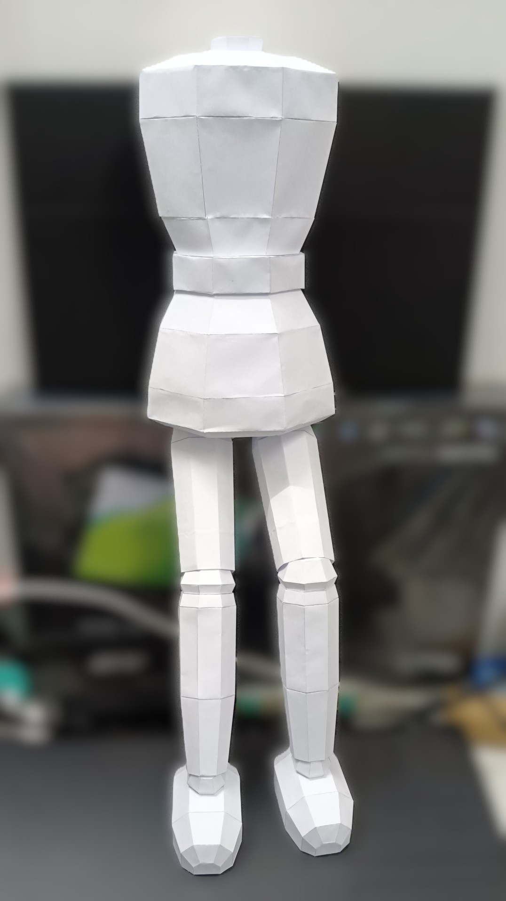
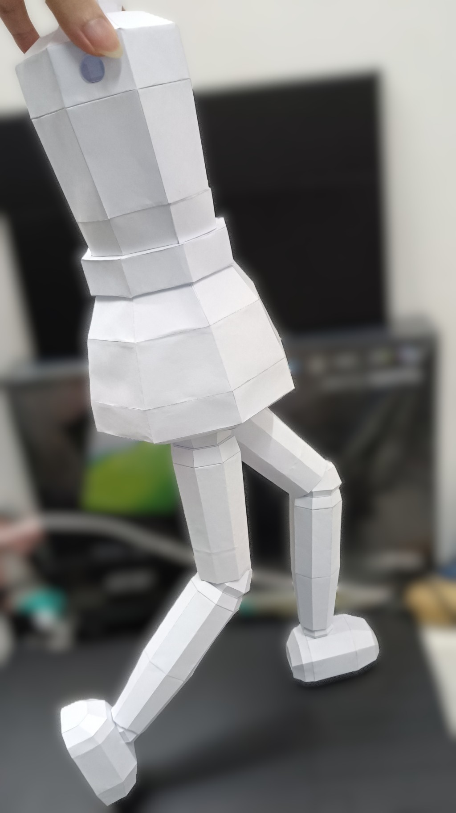
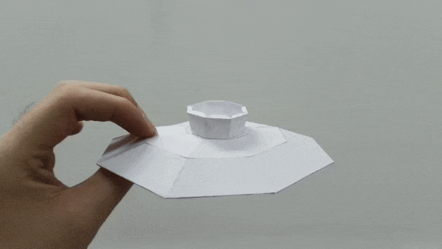
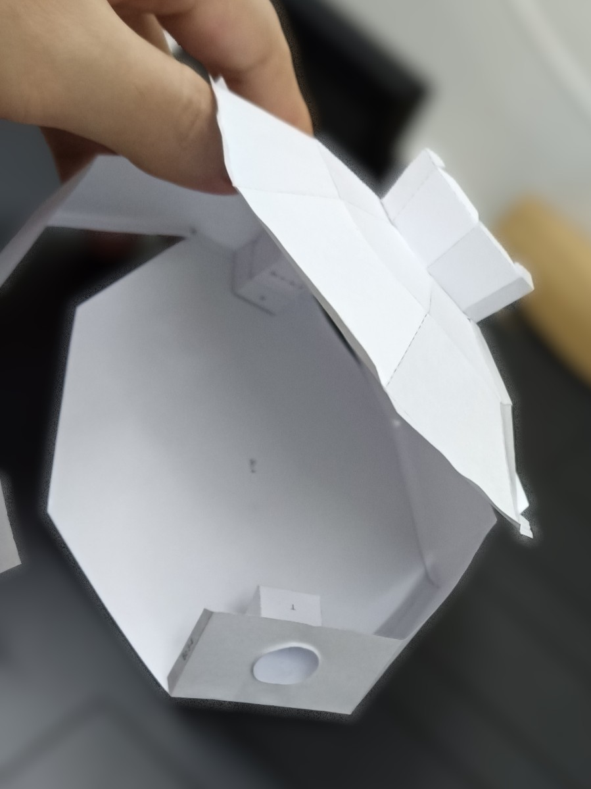
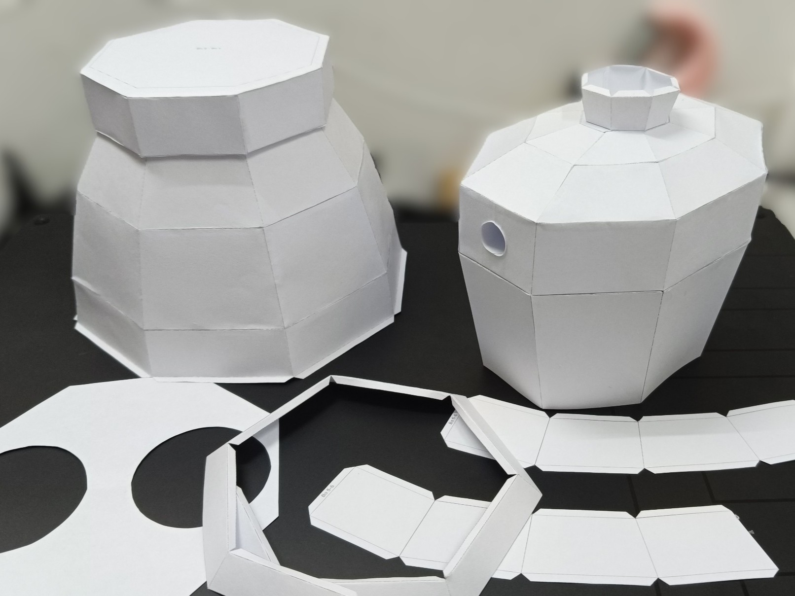
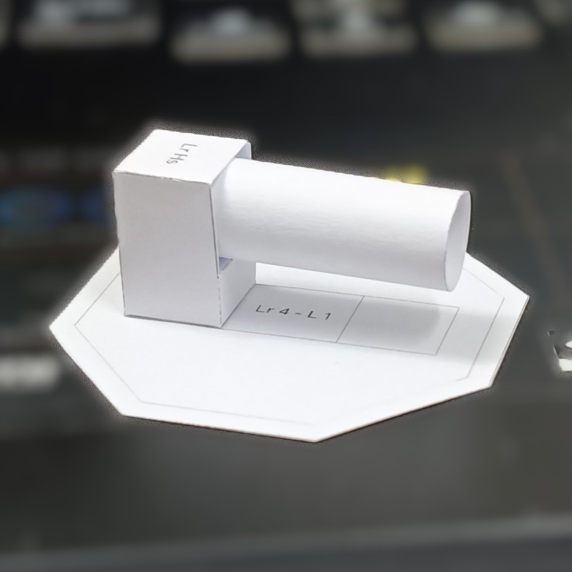
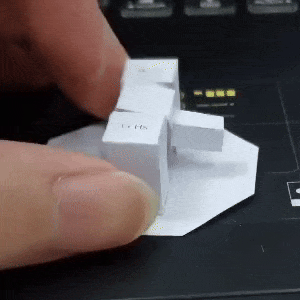
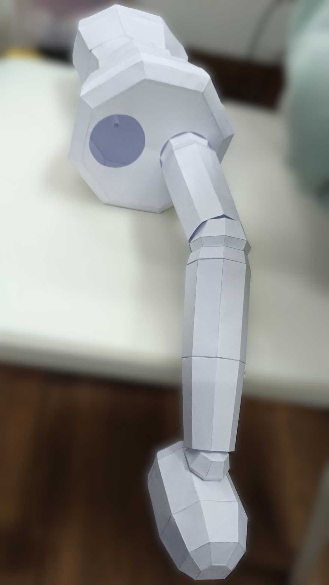
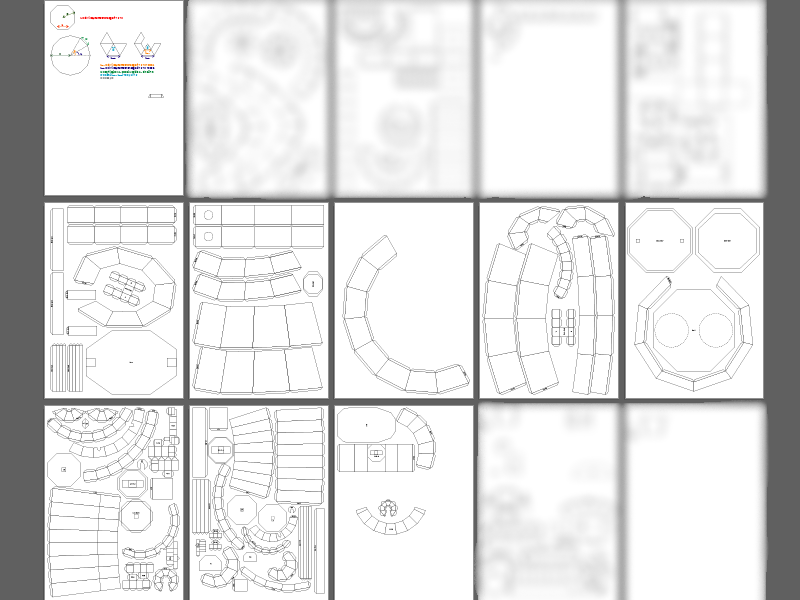

It is an interest of mine to build something out of paper since I'm still under primary education (because I didn't have access to better alternatives).
The paper crafts are usually inspired by any items or characters that I found possible to replicate or built from geometrical shapes (especially regular ones).
Sadly, I've completely lost most of them due to they being treated and handled as trash.
Disclaimer: I don't do this a lot, it's really time consuming especially for complicated ones.


This is the product of my attempt to replicate the NPC nutcracker (Alfred) from my FYP (Workshop of Wishes) during sem break. Its legs, knees and ankles can be rotated in one direction with limited angles.
Unfortunately, the production had been permanently canceled before it can be completed.






